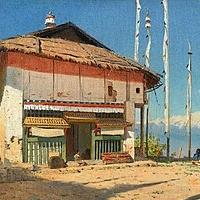
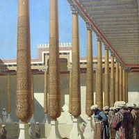
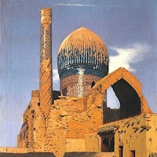
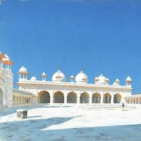

Flex and Grid
Link
Link
Link
Link
Link
×
Tomb of Sheikh Salim Chishti in Fatehpur Sikri.
Gate near Qutub Minar, Old Delhi.

Buddhist Temple in Darjiling, India.

Presentation of the trophies.

Gur Emir mausoleum, Samarkand.

Moti Masjid in the Red Fort of Agra, inner courtyard.